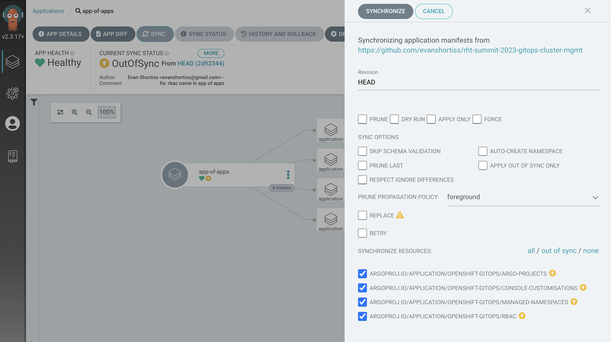

The App of Apps Pattern
⏱️ Estimated Time: 5-10 Minutes
üë©‚Äçüíª Role: Cluster Administrator
Earlier in this workshop you created some managed Namespaces and applied a ResourceQuota to them, but didn’t deploy any resources into those Namespaces. That’s because you were acting as an administrator, configuring Namespaces and OpenShift access for development teams.
The previous section demonstrated that Argo CD has a concept of Projects, and that each Project enforces a set of RBAC policies. Enabling your development teams to use Argo CD requires creating Projects and crafting appropriate RBAC policies.
In this section you’ll manage Argo Project CRs and OpenShift Group CRs using Argo CD. These CRs will enable the foo user to deploy their own Applications using Argo CD.
Instead of continuing to import and manage more Argo CD Applications one-by-one you’ll learn how to use the App of Apps Pattern to bootstrap multiple Applications at once. You’ll also learn about the Argo CD CLI in the process.
The Argo CD CLI
The Web Terminal in your environment has the Argo CD CLI pre-installed. Login to your Argo CD instance via the CLI:
-
Login to the OpenShift Web Console as the
opentlc-mgruser. -
Open the OpenShift Web Terminal using the >_ icon.
-
Verify the Argo CD CLI is available by trying to view the installed version of the CLI:
argocd version -
Once you’ve confirmed the
argocdbinary is available, login to your Argo CD instance as theadminuser:export ARGO_PASSWORD=$(kubectl get secret openshift-gitops-cluster -o json -n openshift-gitops | jq '.data["admin.password"]' -r | base64 --decode) argocd login openshift-gitops-server.openshift-gitops.svc.cluster.local \ --insecure \ --username admin \ --password $ARGO_PASSWORD -
List your current Applications using the following command:
argocd app list
The result displayed by the argocd app list should contain your console-customisations and managed-namespaces Applications and their status.
Creating the App of Apps
Time to deploy the App of Apps. You can find the manifests for the App of Apps in the apps/ folder of your copy of the workshop repository. Take a look inside the apps/ folder; you’ll see that it’s a Helm chart. Don’t worry if you’re not familiar with Helm charts, it’s basically a system for building fully formed YAML from a set of templates and variables/values:
-
values.yaml - contains a set of variables. If these look familiar it’s because they are - they’re values that are required by the Argo CD Application CR.
-
Chart.yaml - simply contains some metadata about this Helm chart.
-
templates/ - contains a set of Application CRs that reference the variables defined in values.yaml.
Argo CD supports Helm charts, so you can use it to create the App of Apps from this Helm chart:
-
Open your copy of the workshop repository.
-
Press the dot/period key to open the GitHub editor.
-
Change the
repoURLin apps/values.yaml to point to your repository’s URL. -
Use the Source Control tab to commit and push the change.
-
Return to the Web Terminal where you logged in to your Argo CD cluster as the
adminuser and run the following command (setGITHUB_URLto your repository’s URL) to create the new app-of-apps Application:export GITHUB_URL=https://github.com/%USERID%/rht-summit-2023-gitops-cluster-mgmt argocd app create app-of-apps \ --server openshift-gitops-server.openshift-gitops.svc.cluster.local \ --dest-namespace openshift-gitops \ --dest-server https://kubernetes.default.svc \ --repo $GITHUB_URL \ --path appsIf the above command fails with an
Unauthenticatederror, repeat theargocdCLI login instructions you followed earlier. -
Return to the Argo CD dashboard and view the new app-of-apps Application. It should report that it’s out of sync.
-
Click on the Sync button, then click on the Synchronize button in the overlay that appears.
 -
Wait for the sync operation to complete, then return to the Argo CD dashboard Applications screen. It should look similar to the following screenshot:

Nice! You have configured the App of Apps. This created new rbac and argo-projects Applications that manage Argo CD Projects and OpenShift user Groups for your development teams.